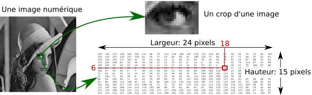
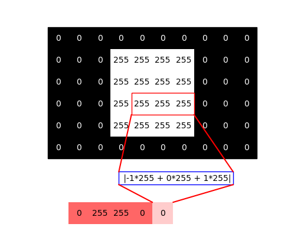
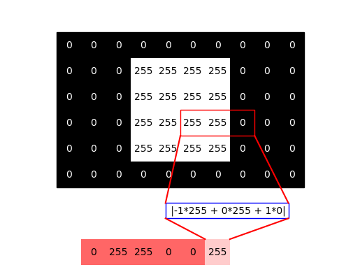
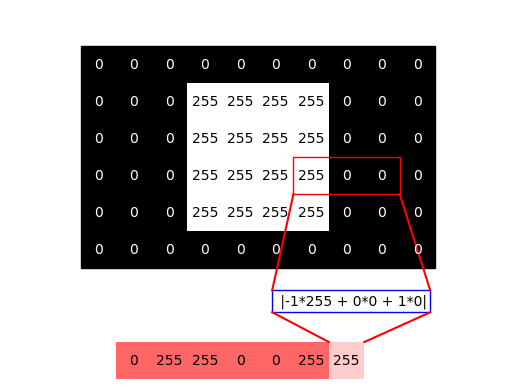

class: center, middle # Qu'est ce qu'une image, qu'est ce qu'une convolution? Paul Gay ??? Plan - applications, motivations, ce que vous verrez cette année - Definition d'une image, binaire, rgb show the baboon, medecine, etc - grandeur mesurée: domaine, capteur - Un contour dans une image, quelque zooms - Parler des artifacts - operations de base, rotation, resize - filtres detection de contours, lissage - Il y a des manières plus propres de faire, ça, mais bon pour nous ça ira. - Generalisation notions de convolutions - Generalisation, detection d'objets - non convolution: le cas de la médiane --- # Domaines d'applications pourquoi nous voudrions travailler avec des images .center[ <br/><br/> ] Et beaucoup d'autres... --- # Différents types d'images .center[<img src="images/cours_ti1/modalities1.png" style="width: 500px;" /> <br/><br/> ] --- # Différents types d'images .center[ <br/><br/> ] --- # Différents types d'images .center[ <br/><br/> ] --- # Différents types d'images .center[ <br/><br/> ] --- # Différents types d'images .center[ <br/><br/> ] --- # Différents types d'images .center[ <br/><br/> ] Et beaucoup d'autres... --- ## Differents traitements .center[ <br/><br/>] Et beaucoup d'autres... --- ## Differents traitements .center[ <br/><br/>] En 2019, le deep learning est surtout utilisé pour la ségmentation/détection --- ## Definition d'une image #### C'est juste un tableau de chiffres. .center[ <br/><br/>] --- ## Definition d'une image #### C'est juste un tableau de chiffres. .center[ <br/><br/>] --- ## Definition d'une image #### C'est juste un tableau de chiffres. .center[ <br/><br/>] Lire et afficher une image en python ``` 1 $ im = imageio.imread("lena_gray.jpeg") # Load the image 2 $ lena_gray = np.array(im) # convert to a numpy array 3 $ eye_lena = lena_gray[111:126,106:130,0] # crop the eye part 4 $ print(eye_lena.shape) Out[25]: (15, 24) 5 $ print(eye_lena[5,17]) Out[26]: 14 ``` --- ## Une image RGB? Une pile de 3 images .center[ <br/><br/>] <small>Source: Alice POREBSKI EIL</small> --- ## Une image RGB? Une pile de 3 images .center[ <br/><br/>] Quelle image correspond à quel canal? --- ## Une image RGB? Une pile de 3 images .center[ <br/><br/>] --- ## Résolution spatiale, résolution tonale .center[ <br/><br/>] <small>Source: Antoine MANZANERA Cours TERI – Master IAD UPMC Paris 6</small> --- ## Opérations de bases: translation, rotation .center[ <br/><br/>] Quel est le résultat de ce code? ``` shifted = np.zeros((img.shape[0], img.shape[1])) for i in range(img.shape[0]): for j in range(img.shape[1]): if i>=50: shifted[i,j] = img[i-50,j] ``` --- ## Opérations de bases: translation, rotation .center[ <br/><br/>] Quel est le résultat de ce code? ``` shifted = np.zeros((img.shape[0], img.shape[1])) for i in range(img.shape[0]): for j in range(img.shape[1]): if i>=50: shifted[i,j] = img[i-50,j] ``` --- ## Opérations de bases: translation, rotation .center[<img src="images/cours_ti1/transformation.png" style="width: 600px;" /> <br/><br/>] Comment obtenir une rotation? --- ## Opérations de bases: translation, rotation .center[<img src="images/cours_ti1/transformation.png" style="width: 600px;" /> <br/><br/>] ``` rotated = np.zeros((img.shape[0], img.shape[1])) R = np.array(((np.cos(np.pi/3), -np.sin(np.pi/3)), (np.sin(np.pi/3), np.cos(np.pi/3)))) c = np.array(img.shape)//2 for i in range(img.shape[0]): for j in range(img.shape[1]): ii, jj = R.dot(np.array((i,j)) - c).astype('int') + c if 0 <= ii < img.shape[0] and 0 <= jj < img.shape[1]: rotated[ii,jj] = img[i,j] ``` --- ## Transformation affines La position du pixel $\begin{pmatrix}x & y \end{pmatrix}^T$ peut être modifiée par: $$\begin{pmatrix}x' \\ y' \end{pmatrix} = A \begin{pmatrix}x & y \end{pmatrix}^T + B,$$ où $A\in \Re^{2,2}$ et $B\in\Re^{2,1}$ .left-column[ - Translation - Rotation - Aggrandissement/réduction (shearing) ] .right-column[ .center[ <br/> ] ] Nous verrons au prochain cours que cela n'inclue pas les effets de perspective. Plus d'infos sur les transformations géometriques: <a href="https://homepages.inf.ed.ac.uk/rbf/HIPR2/affine.htm">https://homepages.inf.ed.ac.uk/rbf/HIPR2/affine.htm </a> --- ## Comment le sens se traduit en pixel? Il est très compliqué de passer d'un tas de nombres associés à des pixels jusqu'à la détection d'un objet. -- .left-column[ L'apparence d'un objet peut varier par: - Translation - Rotation - Point de vue - Changement dans l'illumination - variation intra-classe ] .right-column[ .center[ <br/><br/>] ] --- ## Detection de contours .center[ <br/><br/>] Commençons donc: supposons que nous souhaitons détecter les contours sur cette image. --- ## Detection de contours .center[ <br/><br/>] En particulier sur cette ligne --- ## Detection de contours .center[ <img src="images/cours_ti1/contour.png" style="width: 200px;" /> <br/><br/>] Les contours apparaissent aux changements brusques de valeur des pixels. --- ## Détection de contours .center[ <br/><br/>] Appliquons un filtre k sur une des lignes avec: $$k = \begin{pmatrix}-1 & 0 & 1\end{pmatrix}$$ --- ## Détection de contours .center[ <br/><br/>] Appliquons un filtre k sur une des lignes avec: $$k = \begin{pmatrix}-1 & 0 & 1\end{pmatrix}$$ --- ## Détection de contours .center[ <br/><br/>] Appliquons un filtre k sur une des lignes avec: $$k = \begin{pmatrix}-1 & 0 & 1\end{pmatrix}$$ --- ## Détection de contours .center[ <br/><br/>] --- ## Détection de contours .center[ <br/><br/>] --- ## Détection de contours .center[ <br/><br/>] --- ## Détection de contours .center[ <br/><br/>] --- ## Détection de contours .center[ <br/><br/>] --- ## Détection de contours .center[ <br/><br/>] --- ## Détection de contours .center[ <br/><br/>] Convolution 1D discrète entre un signal $f$ et un filtre $k$ de taille d : $$(f \star k) (i) = \sum\_{n=-\frac{d-1}{2}}^{\frac{d-1}{2}} f(i-n).k(n)$$ --- ## Application sur une image réelle .center[ <br/><br/>] --- ## Application sur une image réelle .center[ <br/><br/>] Notez que les contours ne correspondent pas exactement aux frontières des objets. --- ## Filtre moyenneur: convolution en 2D .center[ <br/><br/>] Voyons un traitement pour retirer les artefacts et adoucir les contours d'une image. --- ## Filtre moyenneur: convolution en 2D .center[<img src="images/cours_ti1/moyenneur_00000.png" style="width: 600px;" /> <br/><br/>] Convolution avec un filtre Moyenneur K ``` In [6]: K = np.ones((3,3)) / 9 array([[0.1, 0.1, 0.1], [0.1, 0.1, 0.1], [0.1, 0.1, 0.1]]) ``` --- ## Filtre moyenneur: convolution en 2D .center[ <br/><br/>] Convolution avec un filtre Moyenneur K ``` In [6]: K = np.ones((3,3)) / 9 array([[0.1, 0.1, 0.1], [0.1, 0.1, 0.1], [0.1, 0.1, 0.1]]) ``` --- ## Filtre moyenneur: convolution en 2D .center[ <br/><br/>] Convolution avec un filtre Moyenneur K ``` In [6]: K = np.ones((3,3)) / 9 array([[0.1, 0.1, 0.1], [0.1, 0.1, 0.1], [0.1, 0.1, 0.1]]) ``` --- ## Filtre moyenneur: convolution en 2D .center[ <br/><br/>] $$(img \star k) (i,j) = \sum\_{n=-\frac{d-1}{2}}^{\frac{d-1}{2}} \sum\_{m=-\frac{d-1}{2}}^{\frac{d-1}{2}} img(i-n,j-m).k(n,m)$$ ou en python: ``` # img[i-(d-1)/2:i+(d-1)/2,j-(d-1)/2:j+(d-1)/2,] pour cropper une partie de l'image à la position i # sum.() somme toutes les valeurs du tableau result_convolution[i,j] = (k * img[i-(d-1)/2:i+(d-1)/2,j-(d-1)/2:j+(d-1)/2,]).sum() ``` --- ## Application sur une image réelle Avec un filtre gaussien 5 x 5 .center[ <br/><br/>] --- ## Effet de bord .center[ <br/><br/>] -Problème : comment traiter le pixel en (0,0)? -Solution couramment utilisée: padding with zéros, ou la valeur des pixels voisins. --- # Convolution 2D en général Filtre de taille $(f_w, f_h)=(5,5)$, sur une image $(I_w, I_h)=(6, 6)$, avec un padding $p=2$ et un pas $s=2$. .center[ <br/><br/>] --- # Convolution 2D en général Filtre de taille $(f_w, f_h)=(5,5)$, sur une image $(I_w, I_h)=(6, 6)$, avec un padding $p=2$ et un pas $s=2$. .center[<img src="images/cours_ti1/stride_blue.png" style="width: 600px;" /> <br/><br/>] --- # Convolution 2D en général Filtre de taille $(f_w, f_h)=(5,5)$, sur une image $(I_w, I_h)=(6, 6)$, avec un padding $p=2$ et un pas $s=2$. .center[ <br/><br/>] --- # Convolution 2D en général Filtre de taille $(f_w, f_h)=(5,5)$, sur une image $(I_w, I_h)=(6, 6)$, avec un padding $p=2$ et un pas $s=2$. .center[<img src="images/cours_ti1/stride_yellow.png" style="width: 600px;" /> <br/><br/>] --- # Convolution 2D en général Filtre de taille $(f_w, f_h)=(5,5)$, sur une image $(I_w, I_h)=(6, 6)$, avec un padding $p=2$ et un pas $s=2$. .center[ <br/><br/>] ``` # initialisation of the convolution result res = np.zeros((math.ceil( (h - fh + 2*p) /s + 1), math.ceil((w - fw + 2*p)/s + 1))) ``` --- ## Autre convolutions célébres ### Fourier, avec $k(x, \xi) = e^{-i\xi x}$ $$(f\star k)(\xi) = \int_{-\inf}^\inf f(x)e^{-i\xi x} dx $$ .center[ <br/><br/>] .center[<img src="images/cours_ti1/fourier2D.png" style="width: 400px;" /> <br/><br/>] --- ### Réseaux de neurones convolutionnels!! Agissent comme des détecteurs de motifs! -- Voyons cela sur une forme simple... --- À quoi ressemblera la convolution de cette image avec ce patch? .center[ <br/><br/>] .center[ <br/><br/>] ``` np.unravel_index(np.argmax(result),result.shape) Out[10]: (174, 68) # position du chiffre 2 sur l'image. ``` -- -Détection du motif quelque soit la translation -- <br> -Évidemment, en pratique, les filtres sont appris, et sont beaucoup plus abstraits. --- ## Transposed convolution En deep learning, le pas et le pooling réduisent la taille de l'image. .center[<img src="images/cours_ti1/padding_strides.gif" style="width: 200px;" /> <br/><br/>] Parfois, nous voulons obtenir l'effet inverse, - Segmentation d'image - Visualisation et interpetation mais comment? --- ## Transposed convolution (parfois abusivement appelé Déconvolution) Insertion de zéros et convolution classique: .center[<img src="images/cours_ti1/padding_strides_transposed.gif" style="width: 200px;" /> <br/><br/>] --- # Justification en 1D: Soient - $x=[x_1\dots x_7]$ un signal 1D, - $w=[w_1, w_2, w_3]$ un filtre, - $y=[y_1, y_2, y_3]$ la convolution $(x\star w)$ avec un pas de 2. Cette opération peut s'écrire sous la forme: $$ \begin{pmatrix} y_1 \\\ y_2 \\\ y_3 \end{pmatrix} = \begin{pmatrix} w_1 & w_2 & w_3 & 0 & \dots& & 0 \\\ 0 & 0 &w_1 & w_2 & w_3 & &\dots \\\ 0 & \dots & & & w_1 & w_2& w_3 \end{pmatrix} \begin{pmatrix} x_1 \\\ x_2 \\\ \vdots \\\ x_8 \end{pmatrix} $$ Ou de manière plus compacte: $y = Wx$ --- # Justification en 1D: Étant donné que la convolution s'écrit $$ y = Wx$$ Cherchons à déconvoluer en calculant: $$ W^{-1}y $$ -- Faisons l'hypothèse que $W$ est orthonormale, nous avons alors: $$W^{-1} = W^T$$ -- En pratique c'est peu probable. Un exemple pour lequel cette hypthèse est vraie: $$W = [-1, 0, 0, 1] $$ --- # Justification en 1D: Sous condition d'othonormalité, le signal déconvolué $\hat{x}$ s'écrit: $$\hat{x} = W^Ty$$ $$ \begin{pmatrix} x_1 \\\ x_2 \\\ \vdots \\\ x_8 \end{pmatrix} = \begin{pmatrix} w_1 & 0 & 0 \\\ w_2 & 0 & \vdots \\\ w_3 & w_1 & \\\ \vdots & w_2 & 0 \\\ & w_3 & w_1 \\\ & 0 & w_2 \\\ 0 & 0 & w_3 \\\ \end{pmatrix} \begin{pmatrix} y_1 \\\ y_2 \\\ y_3 \end{pmatrix} $$ --- # Justification en 1D: Réarrangement des termes: La déconvolution est une convolution! $$ \begin{pmatrix} x_1 \\\ x_2 \\\ \vdots \\\ x_8 \end{pmatrix} = \begin{pmatrix} w_3 & w_2 & w_1 & 0 & \dots& 0 \\\ 0 & w_3 & w_2 & w_1 & & \vdots \\\ \vdots & 0 & w_3 & w_2 & w_1 & \\\ & & \dots & & & \\\ 0 & & & w_3 & w_2 & w_1 \\\ \end{pmatrix} \begin{pmatrix} 0 \\\ 0 \\\ y_1 \\\ 0 \\\ 0 \\\ y_2 \\\ 0 \\\ 0 \\\ y_3 \\\ 0 \\\ 0 \end{pmatrix} $$ --- # À retenir de cette dernière partie - L'augmentation de la résolution peut être réalisée par une convolution en insérant des zéros - Sous certaines hypothèses fortes, cela correspond à une déconvolution - En pratique, ce n'est pas le cas: => Permet d'obtenir une visualisation (voir prochain cours sur l'inteprétation des réseaux ) => Changer la taille des images, (cf cours sur la segmentation d'image.) <small>Source: Lecture 7 du cours de deep learning <a href="https://cs230.stanford.edu/lecture/">CS320</a></small> --- # Glossaire - Padding : ajouter des lignes et des colonnes sur l'extérieur de l'image - scaling : réduire / augmenter la taille de l'image - shearing : scaling vertical et horyzontal de différentes amplitudes - cropping : extraire une partie de l'image. - stride : pas de convolution --- class: middle, center ## Lab : Manipulation basiques et convolutions #### Ouvrir le fichier: <font color="blue">TP_convolutions.ipynb_</font>